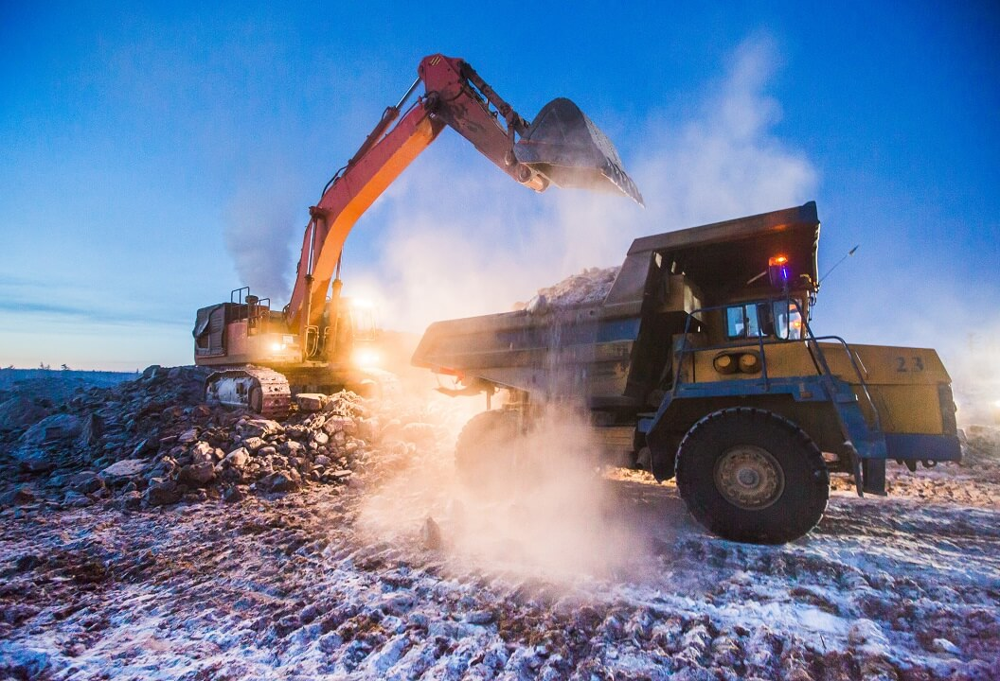
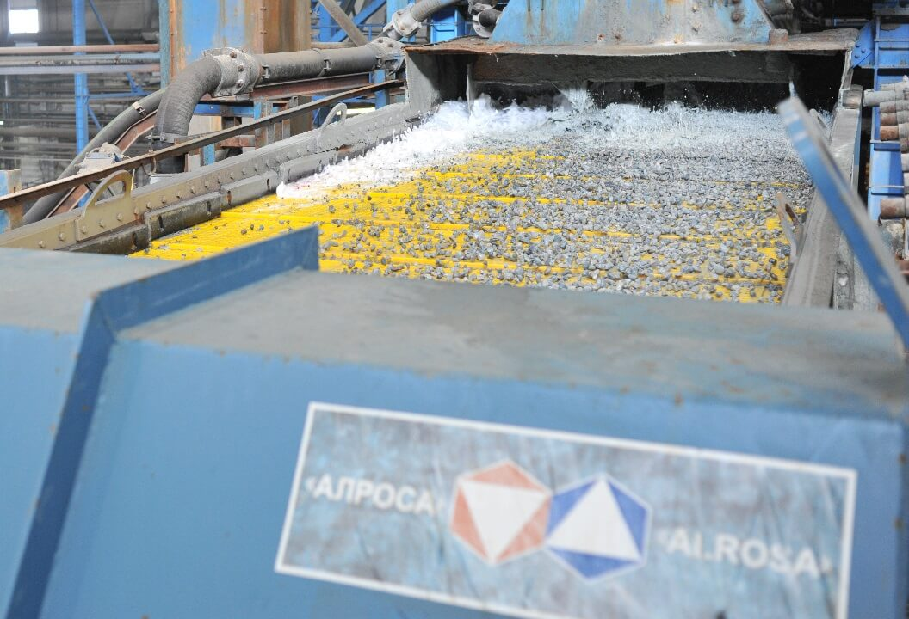
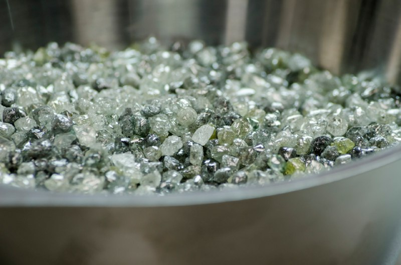
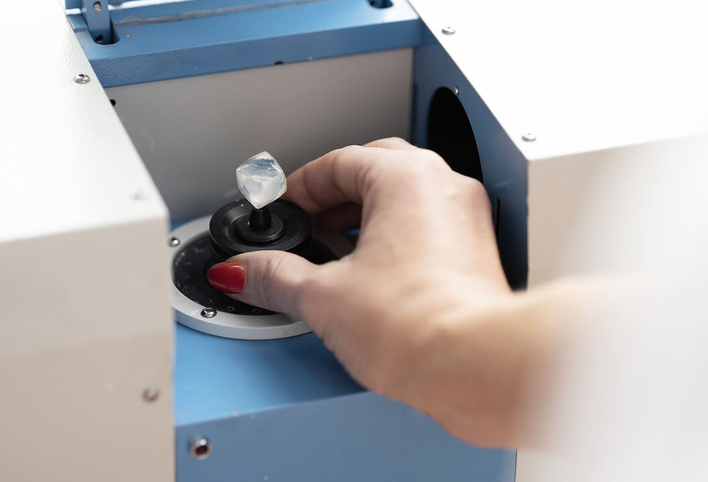
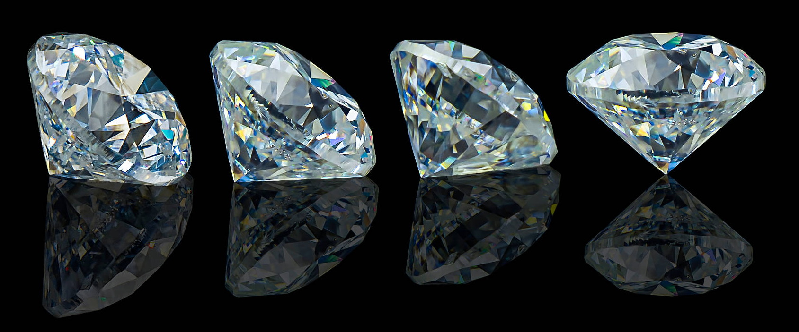

Технологический процесс — это упорядоченная последовательность действий, операций и переходов, направленных на превращение сырья, материалов или заготовок в готовый продукт. Он является основой любого производства, определяя, как именно, на каком оборудовании и в каком порядке создается изделие.
Кимберлитовая трубка на алмазном руднике в ЯкутииЭтап 1. Разведка и подготовка месторождения
Алмазы образуются на глубине 150–200 километров при давлении около 50 000 атмосфер и температуре свыше 1000°C. Из таких недр их выносят вулканические взрывы, создавая кимберлитовые трубки — геологические тела в форме конуса или «чаши на длинной ножке». Поиск трубок начинается с анализа магнитного поля Земли (кимберлиты содержат магнитные минералы), а также с поиска минералов-спутников: пиропа, хромдиопсида, ильменита. Геологи прочёсывают сотни квадратных километров, отбирают пробы породы, бурят скважины на глубину до 2 км. Если найдена промышленная трубка, готовят инфраструктуру: вырубают лес, снимают верхний слой почвы (вскрышу), строят дороги, линии электропередач, вахтовые посёлки для рабочих. В Якутии и других северных регионах всё это осложняется вечной мерзлотой и суровым климатом. Только чтобы получить 1 карат (0,2 грамма) алмазов, нужно добыть и переработать не менее 1 тонны руды.

Открытая добычаЭтап 2. Добыча руды – открытый и подземный способ
Пока кимберлитовая трубка находится на глубине до 600 метров, её разрабатывают открытым способом — карьером. Сначала удаляют покрывающие породы, затем вскрывают саму трубку. Взрывники бурят шпуры (короткие скважины) и закладывают взрывчатку — сотни тонн на один массовый взрыв. Взорванная руда падает в воронки, где её подбирают гигантские экскаваторы (размером с двухэтажный дом) и грузят в самосвалы грузоподъёмностью до 150 тонн. Чтобы подняться со дна карьера на поверхность, самосвал проезжает по серпантину до 10 км. Когда карьер достигает предельной глубины (дальше становится небезопасно или нерентабельно), переходят к подземному способу. Строят шахту: проходят вертикальные стволы и горизонтальные штреки к телу трубки. Там работают проходческие комбайны — их называют «Бобик». Они разрушают породу режущими зубцами и сразу грузят её в вагонетки или на ленточные конвейеры. В шахтах действуют строгие правила безопасности: плакаты, инструктажи, суеверия шахтёров (никогда не называют смену «последней», говорят «крайняя», а перед спуском не возвращаются домой за забытой вещью — это к беде).
Первое дроблениеЭтап 3. Транспортировка и первичное дробление
Добытая руда из карьера или шахты доставляется на обогатительную фабрику. Первое, что её ждёт, — щековая дробилка. Это две могучие стальные плиты (одна неподвижная, другая качающаяся). Между ними попадают куски породы размером более полуметра, и они раскалываются как орехи. За сутки такая дробилка перерабатывает до 6000 тонн руды — почти 250 тонн в час. Важно не перетереть руду в пыль, но и не оставить слишком крупные куски. Дроблёная порода по ленточным конвейерам отправляется дальше — в мельницы.

Дробление с помощью водыЭтап 4. Измельчение и грохочение
Теперь руда попадает в мельницы мокрого самоизмельчения. Это огромные вращающиеся барабаны (диаметром до 7 метров), куда добавляют воду. Под действием центробежной силы и ударов куски породы дробятся друг о друга и о броневые плиты стенок, превращаясь в фракцию размером до 50 мм. Полученная пульпа (смесь воды и измельчённой руды) поступает на грохот — устройство, напоминающее вибрирующее сито с ячейками разного размера (обычно пять уровней). Грохот работает очень шумно и разделяет материал на классы крупности: от самых мелких частиц до 50-миллиметровых. Это необходимо, потому что методы извлечения алмазов зависят от размера камней (крупные и мелкие ловят по-разному).

Натуральные необработанные алмазыЭтап 5. Обогащение — извлечение алмазов из породы
Главное чудо происходит здесь, используя уникальные физические свойства алмазов.
Для крупных кристаллов (более 2–3 мм) применяют рентгенолюминесцентные сепараторы. Руда движется по ленте конвейера под рентгеновским излучением. Алмаз начинает светиться — даёт характерную вспышку. Фотоэлементы мгновенно фиксируют свет, и воздушная пушка выстреливает струёй воздуха, которая выбивает драгоценный камень в отдельный приёмный карман. Пустая порода просто падает в отвал.
Для мелких алмазов (менее 2 мм) используют пленочную флотацию. Здесь работает другое свойство алмаза — гидрофобность (отталкивание воды). Руду смешивают с водой и специальными реагентами (пенообразователями). Пустая порода смачивается и тонет, а алмазы прилипают к пузырькам воздуха и химическим реагентам, образуя сверху слой драгоценной плёнки. Этот слой снимают и отправляют на дальнейшую обработку. Кроме того, иногда применяют тяжелосредную сепарацию (в жидкости с промежуточной плотностью) и магнитные сепараторы для удаления железосодержащих примесей.

Ручная доводкаЭтап 6. Ручная доводка и первичная классификация
После автоматических сепараторов в концентрате всё ещё могут оставаться посторонние минералы (кварц, пирит, гранаты). Поэтому финальный контроль делают вручную. Опытные операторы за освещённым столом с помощью пинцета и лупы выбирают алмазы, одновременно очищая их от налёта. Они же проводят первичную сортировку по пяти классам крупности. Здесь же отделяют ювелирные алмазы (прозрачные, без трещин и включений) от технических (с дефектами, которые пойдут на абразивы, сверла, пасты). Ручной труд остаётся незаменимым, особенно для крупных и нестандартных камней.

БриллиантыЭтап 7. Центр сортировки и продажа
Все алмазы со всех месторождений компании (например, АЛРОСА) стекаются в единый Центр сортировки. В России это сначала город Мирный, затем Москва. Здесь камни моют, сушат, взвешивают с точностью до долей карата, и начинается скрупулёзная классификация по международным стандартам: размерно-весовые группы, цвет (от бесцветного до жёлто-коричневого, редкие голубые и розовые), чистота (количество включений), форма (октаэдры, додекаэдры и т.д.). Крупные алмазы (обычно тяжелее 0,5 карата) сортируют вручную эксперты-геммологи. Для средних и мелких используют оптические автоматы, которые анализируют цвет и форму с помощью цифровых камер. После этого близкие по характеристикам алмазы объединяют в продажные «боксы» (например, 20 камней весом 2–3 карата, цвет 3–5, чистота VS). Их выставляют на долгосрочные контракты или международные аукционы. Далее алмазы поступают гранильным предприятиям (диамантерам), где превращаются в бриллианты, а потом — в ювелирные украшения.
Важно помнить: весь этот путь — от разведки до продажи — может занять от месяца до года. Чтобы получить 1 карат алмазов, нужно переработать минимум 1 тонну руды, а иногда и до 1700 тонн. И при этом добыча сильно влияет на экосистемы: вырубаются леса, изменяются ландшафты, загрязняются воды тяжелыми металлами. Поэтому современные компании ищут способы уменьшить вред, а также всё чаще используют синтезированные алмазы, созданные в лабораториях.